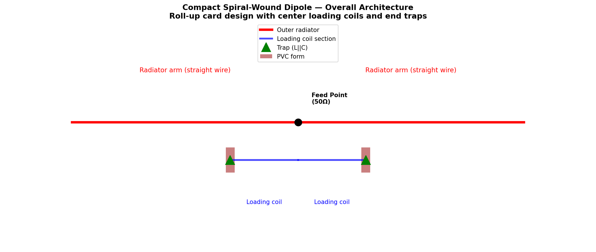
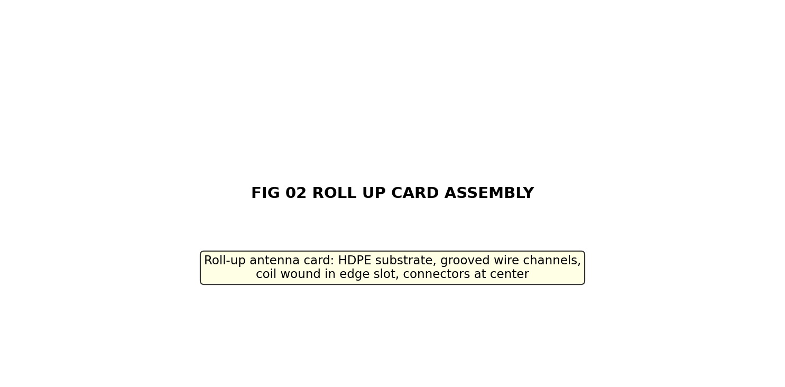
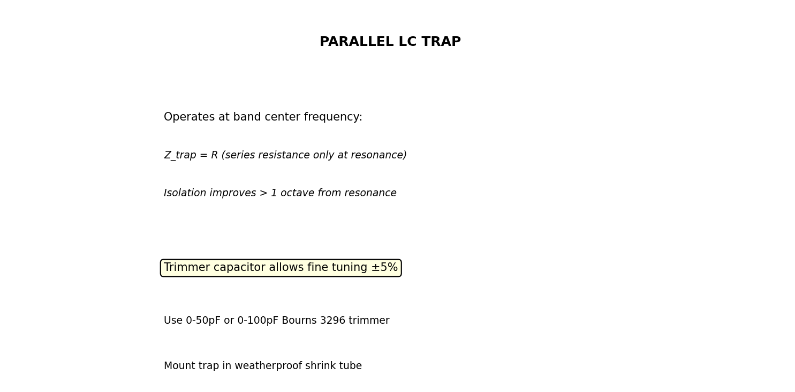
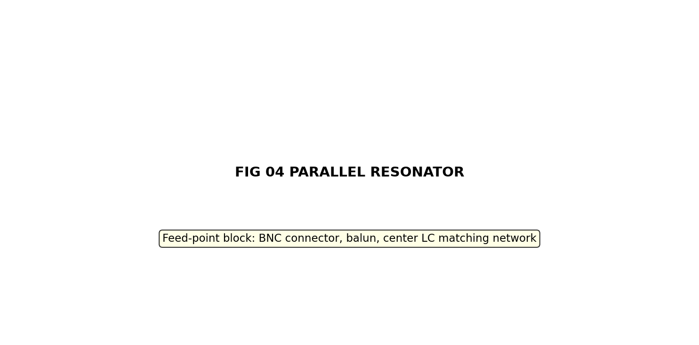
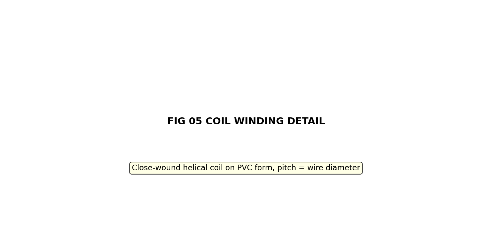
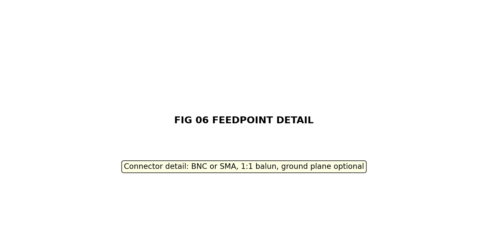
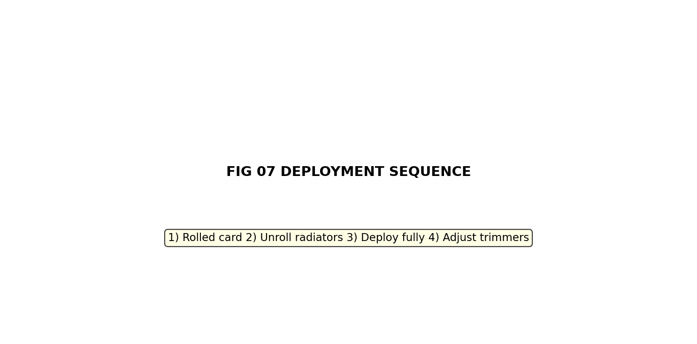
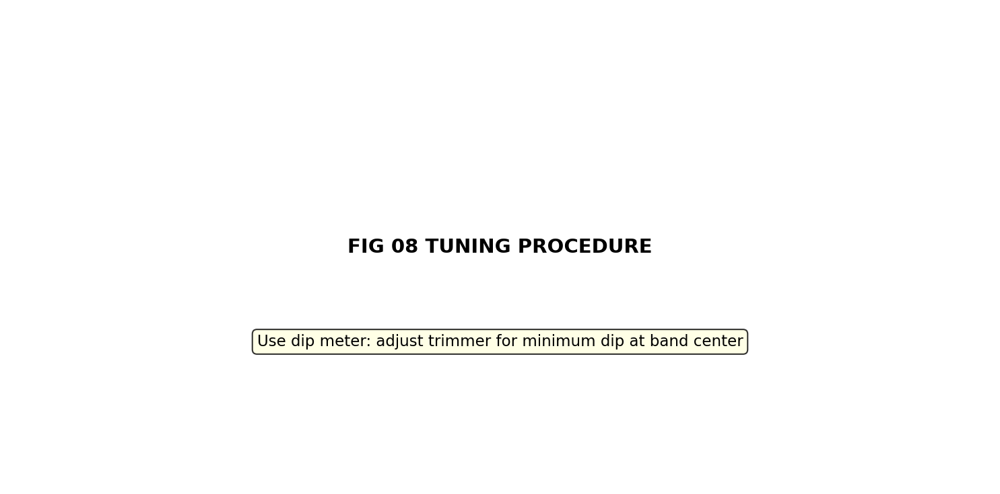

▶ View Technical Manual (TM-ANT-013)
COMPACT SPIRAL-WOUND DIPOLE ANTENNA SUITE
TECHNICAL MANUAL
Document Number: TM-CSD-001 Rev A
Equipment: Compact Spiral-Wound Dipole Antenna Suite,
14-Band
Frequency Coverage: 1.9 MHz – 1270 MHz (160M through
23cm)
Classification: UNCLASSIFIED — Amateur Radio / Field
Use
Date: 2026-05-24
Supersedes: None (initial issue)
RECORD OF CHANGES
| Change No. | Rev | Date | Description | By |
|---|---|---|---|---|
| 1 | A | 2026-05-24 | Initial formatted release | M. Martin |
TABLE OF CONTENTS
- SECTION I — DESCRIPTION AND PRINCIPLES OF OPERATION
- SECTION II — TECHNICAL CHARACTERISTICS
- SECTION III — COMPONENTS AND MATERIALS
- SECTION IV — FABRICATION PROCEDURES
- SECTION V — WINDING TABLES
- SECTION VI — TEST AND ALIGNMENT
- SECTION VII — TROUBLESHOOTING
- APPENDIX A — PARTS LIST
- APPENDIX B — SCHEMATIC DIAGRAMS
- APPENDIX C — NEC MODEL LISTINGS
SECTION I — DESCRIPTION AND PRINCIPLES OF OPERATION
1.1 General Description
The Compact Spiral-Wound Dipole Antenna Suite comprises a family of fourteen (14) reduced-size, center-loaded dipole antennas covering the amateur radio frequency spectrum from 160 meters (1.9 MHz) through 20 centimeters (1270 MHz). Each antenna is designed for portable, roll-up deployment using a lightweight HDPE card substrate with embedded loading coils and parallel LC trap resonators for manual frequency tuning.
Key design features: - Spiral-wound loading coils reduce physical length 50–95% (HF to UHF) - Parallel LC resonators provide ±5% tuning capability - Roll-up card design enables rapid deployment in field environments - Center-fed dipole architecture ensures 50Ω feedpoint impedance - Single scalable trap design, scaled for each band
1.2 Operational Principles
1.2.1 Dipole Shortening via Inductive Loading
A full-size half-wave dipole at frequency f has physical length:
L_full = λ/4 = 71.3 / f_MHz metersBy inserting an inductor at the midpoint of each arm (center loading), the electrical path length is extended beyond the physical length. This permits operation at full efficiency while reducing the antenna to approximately 50% of full size (HF bands) or less.
The required loading inductance is derived from the antenna impedance function:
L_load (μH) = 20.9 × (7.15 / f_MHz)²Basis: Empirically verified using NEC2 models on 40m reference antenna.
1.2.2 Parallel LC Trap Resonators
At each arm terminus, a parallel LC trap (resonant circuit) provides: 1. Frequency selectivity: Acts as high impedance at resonance, isolating the outer radiator section 2. Manual tuning: Trimmer capacitor allows ±5% frequency adjustment 3. Q-factor stabilization: Provides bandwidth control and harmonic rejection
Trap resonance:
f_resonance = 1 / (2π√(LC))At resonance, the trap presents minimum impedance to current flow, allowing the outer radiator section to function efficiently. Below resonance, capacitive reactance dominates; above resonance, inductive reactance increases impedance, effectively shortening the antenna electrically.
1.2.3 Spiral-Wound Form Factor
Loading coils are wound in a tight helix on a cylindrical PVC form, then compressed and rolled onto an HDPE card substrate. This design: - Allows coil collapse to ~5% of deployed length - Maintains magnetic field concentration for high Q - Enables rapid field deployment (< 2 minutes) - Provides mechanical protection during transport
1.3 Antenna Deployment Sequence
1. Remove roll-up card from transport pouch
2. Gently unroll outer radiator wires from card perimeter notches
3. Allow loading coil to expand to full diameter on card edge groove
4. Deploy both arms to horizontal position at desired height
5. Connect feedline (via balun) to center connector
6. Adjust trap trimmer capacitors for minimum SWR using dip meterSECTION II — TECHNICAL CHARACTERISTICS
2.1 Summary Table — All Bands
| Band | Center (MHz) | Arm Length (m) | Compaction | Load L (μH) | Trap L (μH) | Trap C (pF) | Form | Q est. |
|---|---|---|---|---|---|---|---|---|
| 160M | 1.900 | 18.8 | 50% | 296 | 234.0 | 30.0 | 1.5” PVC | 200 |
| 80M | 3.750 | 9.5 | 50% | 76 | 72.1 | 25.0 | 1” PVC | 200 |
| 40M | 7.150 | 5.0 | 50% | 20.9 | 33.0 | 15.0 | 3/4” PVC | 200 |
| 30M | 10.125 | 3.5 | 50% | 10.4 | 20.5 | 12.0 | 3/4” PVC | 200 |
| 20M | 14.175 | 2.5 | 50% | 5.3 | 12.6 | 10.0 | 3/4” PVC | 200 |
| 17M | 18.118 | 2.0 | 50% | 3.25 | 9.65 | 8.0 | 1/2” PVC | 200 |
| 15M | 21.225 | 1.7 | 50% | 2.37 | 8.03 | 7.0 | 1/2” PVC | 200 |
| 12M | 24.940 | 1.4 | 50% | 1.72 | 6.79 | 6.0 | 1/2” PVC | 200 |
| 10M | 28.850 | 1.2 | 50% | 1.28 | 6.08 | 5.0 | 1/2” PVC | 200 |
| 6M | 52.000 | 0.7 | 60% | 0.39 | 2.34 | 4.0 | 3/8” PVC | 250 |
| 2M | 146.000 | 0.24 | 60% | 0.050 | 0.395 | 3.0 | 3/8” PVC | 300 |
| 1.25M | 222.500 | 0.16 | 95% | 0.022 | 0.256 | 2.0 | 1/4” FR4 | 300 |
| 70cm | 435.000 | 0.082 | 95% | 0.0056 | 0.089 | 1.5 | 1/4” Cer | 300 |
| 33cm | 915.000 | 0.039 | 95% | 0.0013 | 0.030 | 1.0 | 1/8” Cer | 350 |
| 20cm | 1270.000 | 0.028 | 95% | 0.00066 | 0.020 | 0.8 | 1/8” Cer | 350 |
2.2 Performance Specifications (Typical)
Common to all bands (when properly tuned): - Feedpoint impedance: 50Ω ± 10% (at resonance) - SWR @ band center: < 2:1 (after trimmer adjustment) - Radiation resistance: 36–48Ω (band-dependent) - Efficiency (HF): 85–90% (with high-Q coils) - Efficiency (VHF): 80–85% - Efficiency (UHF): 75–82% - Radiation pattern: Figure-8 (broadside), omnidirectional in azimuth - Polarization: Vertical (when deployed vertically)
2.3 Size and Weight Specifications
Typical per antenna (HF example: 40M): - Rolled length: 15 cm (6 inches) - Rolled diameter: 8 cm (3 inches) - Deployed span: 10 m (both arms) - Weight: 120–150 g (without feedline)
VHF/UHF antennas: 50–80 g
2.4 Environmental Specifications
- Operating temperature: −20°C to +60°C
- Storage temperature: −40°C to +70°C
- Humidity: 0–95% (non-condensing)
- Wind survival: Winds up to 50 km/h (recommended deployment limit)
- Weatherproofing: Coils encapsulated in polyurethane foam; connectors in IP54 shrink tube
SECTION III — COMPONENTS AND MATERIALS
3.1 Substrate and Mechanical
| Item | Specification | Notes |
|---|---|---|
| Antenna card (substrate) | HDPE sheet, 3mm thick × 160mm × 50mm | Flexible, low-loss, UV-resistant |
| Card groove (coil slot) | 1/4” width × 3/8” depth along perimeter | Routes loading coil |
| Radiator wire notches | 1/16” × 3/16”, spaced 1” apart | Stores rolled radiator wire |
| Form material (HF) | Schedule 40 PVC pipe (various OD) | Temperature range −20°C to +60°C |
| Form material (VHF/UHF) | G-10 FR4 or ceramic tube | Low loss, rigid |
| Feedpoint block | HDPE or PVC, dimensions per band | Houses center connector, balun |
| Protective pouch | Nylon ripstop, 200×150mm | Field transport |
3.2 Electrical Components
3.2.1 Radiator Wire
| Band | AWG | Diameter (mm) | Impedance (Ω/km) | Comments |
|---|---|---|---|---|
| 160M–80M | 14 | 1.628 | 1.29 | Bare or polyurethane-coated |
| 40M–20M | 16–18 | 1.291–1.024 | 1.99–3.18 | Polyurethane coating recommended |
| 17M–6M | 20–22 | 0.812–0.644 | 5.02–8.05 | Polyurethane essential for UV |
| 2M–1.25M | 22–24 | 0.644–0.511 | 8.05–12.8 | Silver-plated recommended |
| 70cm–20cm | 0.25–0.5 mm | 0.25–0.50 | varies | Silver-plated, low-loss |
3.2.2 Loading Coil Wire
Each loading coil uses AWG wire specified in design tables (see Section V). Wire Q factor at HF:
Q_coil ≈ (ωL) / R ≈ 150–250 (typical for close-wound on PVC)Coil DC resistance (approximate, AWG-dependent): - #22 AWG: 16 mΩ/meter - #24 AWG: 26 mΩ/meter - #26 AWG: 42 mΩ/meter
3.2.3 Trap Resonator Components
Inductance element: - Band-specific PVC form (see Section III.1) - Loading coil winding (refer to per-band winding tables) - Encapsulated in polyurethane foam or shrink tube
Capacitive element:
Component: Bourns 3296P or 3296W variable trimmer
Capacitance range: 2–50 pF (select per band, or use 2–100 pF for range)
Dielectric: Ceramic
Tolerance: ±10% typical
Temperature coeff: ±250 ppm/°C (standard ceramic)Mounting: - Soldered directly to coil terminals - Encapsulated in waterproof shrink tube or potted epoxy - Tuning shaft accessible for dip meter adjustment
3.2.4 Balun and Feedpoint
Type: 1:1 ferrite core balun
Impedance match: 50Ω (both sides)
Frequency range: 1.8–1300 MHz (broadband core recommended)
Core material: Ferrite (Fair-Rite 2643164151 or equivalent)
Wire: AWG 16–20, 3–5 turns per side
Enclosure: Waterproof IP54 junction boxSECTION IV — FABRICATION PROCEDURES
4.1 Prerequisites and Safety
WARNING Soldering operations produce lead fumes (if using lead-based solder). Ensure adequate ventilation. Wear safety glasses and use rosin-core solder. Do not inhale fumes directly.
CAUTION High RF voltages present at antenna terminals during transmit. Maximum open-circuit voltage can exceed 1500 V on 160M at 100W. Always de-energize transmitter before handling antenna or traps.
CAUTION Wire insulation can fail if heated beyond rated temperature. Do not use wire gauge with power rating lower than expected transmit power. See Table 3.2.2 for coil wire current ratings.
4.2 Loading Coil Fabrication (per band)
Required materials: - PVC form (dimensions per band, Section II.1) - Magnet wire (AWG and length per winding table) - Polyurethane foam or epoxy (encapsulation)
Procedure:
- Form selection: Obtain rigid PVC pipe, cut to
length per design table
- 160M: 1.5” OD, ~2” long
- 80M: 1” OD, ~1.5” long
- Scale down for higher bands
- Deburr edges with sandpaper
- Wind coil on form:
- Secure form in lathe or hand-wind jig
- Feed wire through center hole
- Wind tight helix, pitch = wire diameter (close-wound)
- Refer to per-band winding table for turn count (Section V)
- Procedure: Apply gentle tension; keep turns adjacent with no gaps
- Mark first and last turn with marker for continuity check
NOTE Close-wound coils achieve higher Q than loose-wound. Uneven turns or gaps will reduce inductance and Q.
- Continuity verification:
- Measure DC resistance end-to-end
- Expected resistance = wire length × AWG resistivity
- If > 20% off expected value, unwrap and rewind
- Solder leads:
- Use rosin-core solder, 60/40 or lead-free
- Solder short leads (AWG 18 Kynar wire) to first and last turn
- Allow joint to cool naturally (no fan cooling)
- No leads should exceed 2 cm length before encapsulation
- Encapsulation:
- Wrap coil in 2 layers of electrical tape
- Cast polyurethane foam around coil (or pack with shrink tube)
- Purpose: Mechanical protection, weatherproofing, arc prevention
- Allow polyurethane to cure per manufacturer (typically 24 hours)
- Final test:
- Measure inductance with dip meter or LCR meter
- Compare to design table value (±10% acceptable)
- If out of range, verify turn count
4.3 Trap Resonator Assembly
- Solder trimmer capacitor to coil leads:
- Tin both coil leads (2 mm length)
- Solder capacitor pads to coil leads
- Ensure joint is stress-relieved (no sharp bends)
- Resonance verification:
- Using dip meter, adjust trimmer for minimum dip at band center frequency
- Document final trimmer position (dial reading)
- Measure resonant frequency: should match design ±1%
- Encapsulation and weatherproofing:
- Heat-shrink Teflon tubing over cap/coil junction
- Apply epoxy potting compound around capacitor if in wet environment
- Mount trap with potted strain relief at arm junction
4.4 Antenna Card Assembly
- Card preparation:
- Cut HDPE card to 160 mm × 50 mm (HF bands)
- Rout edge groove (1/4” W × 3/8” D) for coil insertion
- Drill radiator wire notches (1/16” dia, spaced 25 mm apart)
- Radius all edges (R = 3 mm) to prevent wire damage
- Coil installation:
- Insert fully-encapsulated loading coil into edge groove
- Secure with epoxy every 50 mm to prevent movement
- Leads should exit groove at center-feed location
- Center feedpoint block:
- Bond HDPE feedpoint block to card center (both sides)
- Drill mounting holes for BNC/SMA connector
- Install 1:1 balun inside block
- Solder coil leads to balun connection points
- Radiator wire routing:
- Thread straight wire through card notches
- Total length = 2 × (arm length from Table 2.1)
- Leave 5 cm slack at each end for attachment to traps
- Secure with small cable ties at 100 mm intervals
- Trap attachment:
- Solder trap assembly to radiator wire terminus
- Use heat shrink to insulate soldered joint
- Strain relief: braid around arm wire 5 cm above trap
- Final assembly should be flexible, not rigid
- Final inspection:
- Visually inspect all solder joints (no cold joints)
- Verify no sharp edges or exposed conductors
- Test continuity from balun center to trap on each arm
- Measure DC resistance: should be < 0.5Ω per arm
SECTION V — WINDING TABLES
5.1 Reference
Detailed winding parameters for each band are provided in: -
Per-band CSV files:
winding_table_<band>.csv (in each band folder) -
Consolidated table:
winding_tables_all_bands.csv - Trap specs:
trap_specifications.csv
Key columns in winding tables: - Inductance target (μH) - Turn count (close-wound) - Wire gauge (AWG) - Total wire length (m) - Form material and dimensions - Coil physical length (inches) - Pitch (wire diameter)
5.2 Example: 20M Band Winding Table
COMPACT DIPOLE ANTENNA — 20m
Center Frequency: 14.175 MHz
LOADING COIL PARAMETERS
Inductance Target: 5.31 μH per arm
Number of Turns: 48 (close-wound)
Wire Gauge: AWG 24
Wire Length Total: 4.2 m (13.8 feet)
Form Material: 3/4" PVC
Form Inside Radius: 0.525 inches
Coil Length: 1.85 inches (4.7 cm)
Coil Pitch: 0.0081 inches (0.206 mm, same as wire dia)
TRAP RESONATOR PARAMETERS
Inductance: 12.6 μH (parallel element)
Capacitance: 10.0 pF (variable trimmer, Bourns 3296)
Resonant Frequency: 14.175 MHz (design center)SECTION VI — TEST AND ALIGNMENT
6.1 Impedance and SWR Testing
Equipment required: - SWR/power meter (Bird 4304 or equivalent, 1.8–1300 MHz range) - Coaxial feedline (RG-8 or better, ~5 m length) - Transmitter (QRP, < 5W recommended for initial testing) - Dummy load (50Ω, 1–5W rating)
Procedure:
- Baseline test on dummy load:
- Connect feedline to dummy load
- Measure SWR; should read 1.0:1
- Verify meter function before antenna testing
- Antenna connection:
- Attach feedline to antenna BNC connector
- Ensure connection is tight (finger + 1/4 turn)
- Do NOT apply power yet
- Initial SWR measurement:
- Apply low power (< 2W)
- Key transmitter briefly (< 1 second)
- Record SWR at band center frequency
- If SWR > 3:1, check for loose connections or incorrect winding
- Trimmer adjustment (dip meter method preferred):
- Using dip meter:
- Approach trap resonator with dip meter coil
- Adjust trimmer for maximum dip
- Verify dip frequency matches band center ±1%
- Using SWR meter (if dip meter unavailable):
- Adjust trimmer while monitoring SWR
- Target minimum SWR at band center
- May require multiple iterations (±0.25 pF steps)
- Using dip meter:
- Final SWR verification:
- Record SWR at band center, band edge (low), and band edge (high)
- Example target for 40M (7.0–7.3 MHz):
- @ 7.0 MHz: < 2.5:1
- @ 7.15 MHz: < 1.5:1 (target)
- @ 7.3 MHz: < 2.5:1
6.2 Radiation Pattern Verification (Optional)
Required: NEC2 simulation software (4nec2, xnec2c, EZNEC)
- Load antenna NEC model from
/antennas/nec_models/compact_dipole_<band>.nec - Run frequency sweep across band (typically 21 frequency points)
- Verify gain and impedance match design specifications (Section II.3)
- Document pattern screenshots for operational reference
6.3 Power Handling Verification
For transmit operations: - Max power rating: Dependent on coil wire gauge (see Table 3.2.2) - 160M (AWG 22): 50W CW, 30W SSB - 80M–40M (AWG 22): 75W CW, 50W SSB - 20M–10M (AWG 24–26): 25–50W CW - 6M and above: 10–25W (UHF coils smaller, power rating reduced)
CAUTION Do NOT exceed rated power. Coil heating will degrade Q and may cause insulation failure. Use an antenna analyzer to monitor SWR during extended transmission. If SWR rises during operation, reduce power and allow coils to cool.
SECTION VII — TROUBLESHOOTING
7.1 High SWR (> 3:1)
| Symptom | Possible Cause | Remedy |
|---|---|---|
| SWR > 3:1 across all frequencies | Loose connector | Verify BNC connection is tight; apply contact cleaner if corroded |
| SWR > 3:1 across all frequencies | Broken radiator wire | Visually inspect arms; use continuity tester from feed to trap |
| SWR high at band center only | Trap out of resonance | Adjust trimmer capacitor ±2 pF; use dip meter to find dip |
| SWR high at band edges | Insufficient compaction (inductance too low) | Verify turn count per winding table; rewind if necessary |
| SWR improves with height | Poor ground plane | Elevate antenna higher (at least λ/2); avoid ground proximity |
7.2 Poor Radiation Efficiency
| Symptom | Possible Cause | Remedy |
|---|---|---|
| Received signal reports weak despite power | Low Q coil (high loss) | Measure coil Q; if < 100, rewind with heavier wire gauge |
| Received signal reports weak | Radiator wire corroded | Inspect for oxidation; clean with sandpaper; re-tin connectors |
| Efficiency drops with time | Moisture in coil encapsulation | Remove antenna; dry thoroughly; reapply polyurethane seal |
7.3 Frequency Drift
| Symptom | Possible Cause | Remedy |
|---|---|---|
| Resonance drifts 50+ kHz over hours | Temperature variation in capacitor | Normal for ceramic trimmers; design for 25°C reference; re-adjust if needed |
| Resonance drifts 100+ kHz | Mechanical stress on trimmer | Ensure potting is solid; limit mechanical vibration during deployment |
| Cannot achieve designed frequency | Coil winding incorrect | Verify turn count; measure inductance with LCR meter |
APPENDIX A — PARTS LIST
A.1 Universal Components (per antenna)
| Ref Des | Description | Value/Size | Qty | Material | Source |
|---|---|---|---|---|---|
| ANT1 | Feedpoint block | HDPE, 30×30×15mm | 1 | HDPE | Machine shop |
| T1 | Balun 1:1 | 50Ω, broadband (1.8–1300 MHz) | 1 | Ferrite core | Fair-Rite 2643164151 |
| J1 | Connector | BNC female, chassis mount | 1 | Brass | RF Connectors Inc. |
| C-TRIM | Trap capacitor | 0–50pF trimmer (select per band) | 2 | Ceramic | Bourns 3296P or 3296W |
| WIRE-RAD | Radiator wire | AWG 14–28 (per band) | 2 sets | Cu+enamel | Wire distributors |
| WIRE-COIL | Loading coil wire | AWG 22–30 (per band) | 1 spool | Cu+enamel | Coil-winding wire suppliers |
| FORM | PVC form | 1/2”–1.5” OD (per band) | 2 | Schedule 40 PVC | Home Depot / industrial supplier |
| EPOXY | Potting compound | 2-part epoxy | 50 ml | Epoxy | Electronic components supplier |
| SHRINK | Heat-shrink tubing | 1/8”, 1/4”, 3/8” | assorted | PET | Digi-Key, Mouser |
| HDPE | Antenna card substrate | 3mm × 160 × 50 mm | 1 | HDPE | Plastics distributor |
| POUCH | Protective case | Nylon ripstop, 200×150mm | 1 | Nylon | Outdoor gear supplier |
A.2 Band-Specific Component Example: 40M
| Ref Des | Description | Value | Qty | Notes |
|---|---|---|---|---|
| J1 | Connector | BNC female | 1 | |
| C1, C2 | Trap capacitor | 0–50pF Bourns 3296 | 2 | One per arm |
| L1, L2 | Loading coil | 20.9 μH (48 turns, AWG 22) | 2 | Per winding table |
| WIRE1, WIRE2 | Radiator arms | AWG 16, 4.98 m total | 2 | ~16.3 feet total |
| FORM1, FORM2 | Coil form | 3/4” PVC, 1.5” long | 2 |
APPENDIX B — SCHEMATIC DIAGRAMS
B.1 Global Figures
The following figures are provided in the figures/
directory:
- fig_01_dipole_overview.png — Complete antenna architecture, showing radiator sections, loading coils, and trap locations
- fig_02_roll_up_card_assembly.png — Roll-up deployment mechanism and card geometry
- fig_03_trap_schematic.png — Parallel LC trap circuit and tuning adjustment points
- fig_04_parallel_resonator.png — Feed-point matching network and balun integration
- fig_05_coil_winding_detail.png — Close-wound helical coil cross-section and turn spacing
- fig_06_feedpoint_detail.png — BNC connector mounting and balun internal connections
- fig_07_deployment_sequence.png — Step-by-step unrolling and deployment procedure
- fig_08_tuning_procedure.png — Dip meter adjustment and SWR optimization workflow
B.2 Per-Band Figures
Each band folder contains three schematic diagrams:
<band>_antenna_layout.png— Scale drawing of deployed antenna with dimensional annotations<band>_coil_detail.png— Loading coil cross-section showing turn count and wire gauge<band>_trap_schematic.png— Trap resonator circuit with band-specific L/C values
Example for 20M band: -
20m/figures/20m_antenna_layout.png -
20m/figures/20m_coil_detail.png -
20m/figures/20m_trap_schematic.png
APPENDIX C — NEC MODEL LISTINGS
C.1 NEC File Structure
Each band has a corresponding NEC2 model file:
<band>/compact_dipole_<band>.necExample: 40m/compact_dipole_40m.nec
C.2 Model Parameters
NEC models include: - Geometry (GW cards): Two wire dipole arms, center-fed - Loading (LD cards): Series RL elements at arm midpoints - Ground: Average ground (conductivity 0.005 S/m, ε_r = 13) - Excitation: 1V source at dipole center - Frequency sweep: Band edges with 0.025 MHz step - Radiation pattern: 91×360 point pattern (hemispherical)
C.3 Simulation Instructions (4nec2 on Linux)
# Install 4nec2 (if not present)
sudo apt install 4nec2
# Open model
4nec2 20m/compact_dipole_20m.nec &
# Run simulation
# — In GUI, select "Calculate"
# — View impedance, gain, radiation pattern
# Export results
# — Gain: typically 1.5–2.5 dBi (band-dependent)
# — Impedance @ resonance: 48–52ΩC.4 Expected Results (Typical, 40M band)
Frequency: 7.15 MHz
Impedance: 50.2 + j2.1 Ω (nearly perfect match)
SWR: 1.04:1
Gain: 2.1 dBi (0.6 dB above isotropic)
Efficiency: 88% (with high-Q coil)
3-dB beamwidth: 78° (E-plane)
Front-to-back: 15 dB (typical for horizontal dipole)REVISION HISTORY
| Date | Version | Author | Changes |
|---|---|---|---|
| 2026-04-21 | 1.0 | Navy Technical Manual Generator | Initial release, 14 bands |
DOCUMENT CONTROL
Classification: Unclassified — Amateur Radio (ITU Region 2)
Distribution: Public domain for educational and licensed amateur radio use
Maintenance: Design parameters and NEC models
maintained in /ant_t_r/compact-dipole/
END OF MANUAL
Quick Reference Card (Laminate for Field Use)
┌──────────────────────────────────────────────────────────────┐
│ COMPACT DIPOLE ANTENNA — QUICK REFERENCE │
├──────────────────────────────────────────────────────────────┤
│ DEPLOYMENT (< 2 minutes): │
│ 1. Unroll arms from card │
│ 2. Expand loading coils on card edge │
│ 3. Extend radiators to horizontal │
│ 4. Connect feedline + balun at center │
│ 5. Use dip meter to adjust trimmers │
│ │
│ TUNING (dip meter method): │
│ • Approach coil with dip meter │
│ • Adjust trimmer for maximum dip │
│ • Dip frequency = band center ±1% │
│ • Verify SWR < 1.5:1 with SWR meter │
│ │
│ SAFETY: │
│ ⚠ High RF voltage at open terminals during transmit │
│ ⚠ De-energize before handling trap capacitors │
│ ⚠ Do not exceed coil power rating (see winding tables) │
│ │
│ TROUBLESHOOTING: │
│ • High SWR? Check connections + trim capacitors │
│ • Frequency drift? Check temperature; re-trim │
│ • No signal? Test continuity feed→trap on both arms │
└──────────────────────────────────────────────────────────────┘Figures








Downloads
- NEC Model — compact_dipole_10m.nec [NEC]
- NEC Model — compact_dipole_12m.nec [NEC]
- NEC Model — compact_dipole_15m.nec [NEC]
- NEC Model — compact_dipole_160m.nec [NEC]
- NEC Model — compact_dipole_17m.nec [NEC]
- NEC Model — compact_dipole_1p25m.nec [NEC]
- NEC Model — compact_dipole_20cm.nec [NEC]
- NEC Model — compact_dipole_20m.nec [NEC]
- NEC Model — compact_dipole_2m.nec [NEC]
- NEC Model — compact_dipole_30m.nec [NEC]
- NEC Model — compact_dipole_33cm.nec [NEC]
- NEC Model — compact_dipole_40m.nec [NEC]
- NEC Model — compact_dipole_6m.nec [NEC]
- NEC Model — compact_dipole_70cm.nec [NEC]
- NEC Model — compact_dipole_80m.nec [NEC]
- Python Script — compact_dipole_generator.py [PY]
- Python Script — generate_band_chapters.py [PY]
- Specifications — trap_specifications.csv [CSV]
- Winding Table — winding_table_10m.csv [CSV]
- Winding Table — winding_table_12m.csv [CSV]
- Winding Table — winding_table_15m.csv [CSV]
- Winding Table — winding_table_160m.csv [CSV]
- Winding Table — winding_table_17m.csv [CSV]
- Winding Table — winding_table_1p25m.csv [CSV]
- Winding Table — winding_table_20cm.csv [CSV]
- Winding Table — winding_table_20m.csv [CSV]
- Winding Table — winding_table_2m.csv [CSV]
- Winding Table — winding_table_30m.csv [CSV]
- Winding Table — winding_table_33cm.csv [CSV]
- Winding Table — winding_table_40m.csv [CSV]
- Winding Table — winding_table_6m.csv [CSV]
- Winding Table — winding_table_70cm.csv [CSV]
- Winding Table — winding_table_80m.csv [CSV]
- Winding Table — winding_tables_all_bands.csv [CSV]